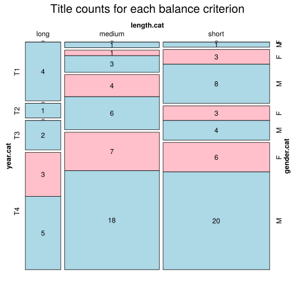

Click on a column heading to sort. Click on a text identifier to read the text (may not work in older browsers).
| Identifier | Encoding | Pages | Words | (Size) | Date (Slot) | Title | Author | Sex | Reprints |
|---|---|---|---|---|---|---|---|---|---|
| GSW0001 |
eltec-0 | 227 | 37549 | (short) | 1912 (T4) | Aus Kinderland | Frohnmeyer, Ida (1882-1968) | F | unspecified |
| GSW0002 |
eltec-0 | 134 | 25126 | (short) | 1921 (T4) | Aus stillen Gassen | Frohnmeyer, Ida (1882-1968) | F | unspecified |
| GSW0003 |
eltec-0 | 307 | 68956 | (medium) | 1920 (T4) | Der glückliche Sommer | Moeschlin, Felix (1882-1969) | M | unspecified |
| GSW0004 |
eltec-0 | 168 | 30370 | (short) | 1918 (T4) | Rosswiler Geschichten und anderes | Baerwart, Theobald (1872-1942) | M | unspecified |
| GSW0005 |
eltec-0 | 361 | 73487 | (medium) | 1908 1900 (T4) | Der König der Bernina | Heer, Jakob Christoph (1859-1925) | M | unspecified |
| GSW00054 |
eltec-0 | 235 | 60869 | (medium) | 1878 (T2) | Heimatlos | Spyri, Johanna (1827-1901) | F | unspecified |
| GSW0006 |
eltec-0 | 475 | 92531 | (medium) | 1898 (T3) | An heiligen Wassern | Heer, Jakob Christoph (1859-1925) | M | unspecified |
| GSW0007 |
eltec-0 | 550 | 114532 | (long) | 1913 (T4) | Die Geschichte der Anna Waser | Waser, Maria (1878-1939) | F | unspecified |
| GSW0008 |
eltec-0 | 367 | 80314 | (medium) | 1913 (T4) | Jungfer Therese | Federer, Heinrich (1866-1928) | M | unspecified |
| GSW0009 |
eltec-0 | 99 | 25970 | (short) | 1880 (T3) | Im Rhonethal | Spyri, Johanna (1827-1901) | F | unspecified |
| GSW0010 |
eltec-0 | 103 | 30767 | (short) | 1903 (T3) | Aus Berg und Tal. Charakterbilder aus dem schweizer. Bauernleben | Kiebler, Ulrich (1864-1929) | M | unspecified |
| GSW0011 |
eltec-0 | 360 | 79740 | (medium) | 1912 (T4) | Pilatus. Eine Erzählung aus den Bergen | Federer, Heinrich (1866-1928) | M | unspecified |
| GSW0012 |
eltec-0 | 414 | 88800 | (medium) | 1882 (T3) | Das Sinngedicht | Keller, Gottfried (1819-1890) | M | unspecified |
| GSW0013 |
eltec-0 | 50 | 12497 | (short) | 1917 (T4) | Das Jätvreni | Waser, Maria (1878-1939) | F | unspecified |
| GSW0014 |
eltec-0 | 131 | 16808 | (short) | 1919 (T4) | Scala Santa | Waser, Maria (1878-1939) | F | unspecified |
| GSW0015 |
eltec-0 | 76 | 21982 | (short) | 1905 (T4) | Spätrot.Rosen im Schnee. Schweizer Novellen | von Berlepsch, Goswina Maria (1845-1916) | F | unspecified |
| GSW0016 |
eltec-0 | 283 | 75238 | (medium) | 1884 (T3) | Aus der Heimat | Walden, Marie (1834-1890) | F | unspecified |
| GSW0017 |
eltec-0 | 136 | 22729 | (medium) !! | 1885 (T3) | Die Richterin | Meyer, Conrad Ferdinand (1825-1898) | F | unspecified |
| GSW0018 |
eltec-0 | 39 | 9015 | (short) | 1891 (T3) | Friedli der Kolderli | Spitteler, Carl (1845-1924) | M | unspecified |
| GSW0019 |
eltec-0 | 229 | 47104 | (short) | 1906 (T4) | Imago | Spitteler, Carl (1845-1924) | M | unspecified |
| GSW0020 |
eltec-0 | 160 | 28754 | (short) | 1914 (T4) | Heimatscholle | Berlepsch, Maria Goswina (1845-1916) | F | unspecified |
| GSW0021 |
eltec-0 | 406 | 110315 | (long) | 1921 (T4) | Ein Rufer in der Wüste | Bosshart, Jakob (1862-1924) | M | unspecified |
| GSW0022 |
eltec-0 | 256 | 52470 | (medium) | 1909 (T4) | Der Pfeiferkönig. Eine Zürchergeschichte | Lienert, Meinrad (1865-1933) | M | unspecified |
| GSW0023 |
eltec-0 | 435 | 234406 | (long) | 1924 (T4) | Der Kinderkreuzzug. 1. Band | Falke, Konrad (1880-1942) | M | unspecified |
| GSW0025 |
eltec-0 | 281 | 58249 | (medium) | 1893 (T3) | Fermont | Siegfried, Walther (1858-1947) | M | unspecified |
| GSW0031 |
eltec-0 | 181 | 34368 | (short) | 1909 (T4) | Schaffner, Jakob (1875 - 1944) | M | unspecified | |
| GSW0050 |
eltec-0 | 270 | 69653 | (medium) | 1887 (T3) | Was soll denn aus ihr werden? | Spyri, Johanna (1827-1901) | F | unspecified |
| GSW0051 |
eltec-0 | 229 | 94405 | (medium) | 1886 (T3) | Martin Salander | Keller, Gottfried (1819-1890) | M | unspecified |
| GSW0052 |
eltec-0 | 256 | 54068 | (medium) | 1915 (T4) | Der lange Balthasar | Heer, Jakob Christoph (1859-1925) | M | unspecified |
| GSW0053 |
eltec-0 | 575 | 150157 | (long) | 1911 (T4) | Berge und Menschen | Federer, Heinrich (1866-1928) | M | unspecified |
| GSW0055 |
eltec-0 | 165 | 27826 | (medium) !! | 1884 (T3) | Die Hochzeit des Mönchs | Meyer, Conrad Ferdinand (1825-1898) | M | unspecified |
| GSW0056 |
eltec-0 | 334 | 76484 | (medium) | 1918 (T4) | Er und Sie und das Paradies | Wenger, Lisa (1858-1941) | F | unspecified |
| GSW0057 |
eltec-0 | 301 | 81053 | (medium) | 1910 (T4) | Die Wunderdoktorin | Wenger, Lisa (1858-1941) | F | unspecified |
| GSW0058 |
eltec-0 | 341 | 77211 | (medium) | 1915 (T4) | Der Rosenhof | Wenger, Lisa (1858-1941) | F | unspecified |
| GSW0059 |
eltec-0 | 235 | 41845 | (medium) !! | 1880 (T3) | Der Heiige | Meyer, Conrad Ferdinand (1825-1898) | M | unspecified |
| GSW0060 |
eltec-0 | 232 | 44524 | (medium) !! | 1892 (T3) | Thalia in der Sommerfrische | von Berlepsch, Maria Goswina (1845-1916) | F | unspecified |
| GSW0061 |
eltec-0 | 416 | 97111 | (medium) | 1910 (T4) | Heinrich Manesses Abenteuer und Schicksale | Vögtlin, Adolf (1861-1947) | M | unspecified |
| GSW0062 |
eltec-0 | 278 | 67741 | (medium) | 1914 (T4) | Geschichten aus dem Emmental | Gfeller, Simon (1868-1943) | M | unspecified |
| GSW0063 |
eltec-0 | 346 | 121571 | (long) | 1890 (T3) | Tino Moralt. Kampf und Ende eines Künstlers | Siegfried, Walther (1858-1947) | M | unspecified |
| GSW0065 |
eltec-0 | 273 | 60471 | (medium) | 1906 (T4) | Die Turnachkinder im Sommer | Bindschedler, Ida (1854-1919) | F | unspecified |
| GSW0066 |
eltec-0 | 461 | 165536 | (long) | 1850 (T1) | Die Käserei in der Vehfreude | Gotthelf, Jeremias (1797-1854) | M | unspecified |
| GSW0067 |
eltec-0 | 94 | 25213 | (short) | 1858 (T2) | Die Verschüttung im Hauenstein | Fröhlich, Abraham Emanuel (1796-1865) | M | unspecified |
| GSW0068 |
eltec-0 | 336 | 90029 | (medium) | 1910 (T4) | Konrad Pilater | Schaffner, Jakob (1875-1944) | M | unspecified |
| GSW0069 |
eltec-0 | 336 | 79181 | (medium) | 1904 (T4) | Der Sonderbündler | Bernoulli, Carl Albrecht (1868-1937) | M | unspecified |
| GSW0070 |
eltec-0 | 341 | 82874 | (medium) | 1912 (T4) | Im Expresszug durch Sibirien. Reisebriefe | Barell-Leuzinger, Ida (1856-1927) | F | unspecified |
| GSW0071 |
eltec-0 | 440 | 96480 | (medium) | 1906 (T4) | Zum Gesundgarten | Bernoulli, Carl Albrecht (1868-1937) | M | unspecified |
| GSW0072 |
eltec-0 | 100 | 19561 | (short) | 1907 (T4) | Peterli am Lift | Bolt, Niklaus (1864-1947) | M | unspecified |
| GSW0074 |
eltec-0 | 267 | 63642 | (medium) | 1915 (T4) | Der sterbende Rausch. Roman aus der Zeit der Schweizerischen Grenzbesetzung | Bernoulli, Carl Albrecht (1868-1937) | M | unspecified |
| GSW0075 |
eltec-0 | 157 | 36750 | (short) | 1920 (T4) | Sonnwende über dem Iltishag. Eine Geschichte aus dem oberen Toggenburg | Birnstiel, Johann Georg (1858-1927) | M | unspecified |
| GSW0076 |
eltec-0 | 249 | 35213 | (short) | 1916 (T4) | Allzeit bereit | Bolt, Niklaus (1864-1947) | M | unspecified |
| GSW0077 |
eltec-0 | 246 | 38635 | (short) | 1913 (T4) | Svizzero! Die Geschichte einer Jugend | Bolt, Niklaus (1864-1947) | M | unspecified |
| GSW0078 |
eltec-0 | 235 | 48583 | (short) | 1902 (T4) | Die Barettlitochter | Bosshart, Jakob (1862-1924) | M | unspecified |
| GSW0079 |
eltec-0 | 325 | 67712 | (medium) | 1913 (T4) | Erdschollen | Bosshart, Jakob (1862-1924) | M | unspecified |
| GSW0080 |
eltec-0 | 212 | 36993 | (short) | 1919 (T4) | Nimrod | Bosshart, Jakob (1862-1924) | M | unspecified |
| GSW0081 |
eltec-0 | 403 | 102886 | (long) | 1898 (T3) | Im Nebel. Erzählungen aus den Schweizer Bergen | Bosshart, Jakob (1862-1924) | M | unspecified |
| GSW0082 |
eltec-0 | 317 | 53768 | (medium) | 1913 (T4) | Capriccio. Novelletten | Castell, Alexander (1883-1939) | M | unspecified |
| GSW0083 |
eltec-0 | 278 | 61824 | (medium) | 1910 (T4) | Der seltsame Kampf | Castell, Alexander (1883-1939) | M | unspecified |
| GSW0084 |
eltec-0 | 224 | 53870 | (medium) | 1911 (T4) | Altfränkische Leut. Eine zahme Geschichte aus bewegten Tagen | Hetzel, Elisabeth (1835-1908) | F | unspecified |
| GSW0085 |
eltec-0 | 336 | 67609 | (medium) | 1911 (T4) | An den Gletscherbächen. Erzählungen | Jegerlehner, Johannes (1871-1937) | M | unspecified |
| GSW0086 |
eltec-0 | 157 | 33923 | (short) | 1907 (T4) | Die Schartenmättler | Kurz, Hermann (1880-1933) | M | unspecified |
| GSW0087 |
eltec-0 | 439 | 112581 | (long) | 1914 (T4) | Bergdorfgeschichten | Lienert, Meinrad (1865-1933) | M | unspecified |
| GSW0088 |
eltec-0 | 64 | 22754 | (short) | 1891 (T3) | Hansli und Hans. Eine wahre Geschichte | Nydegger, Hans (1848-1909) | M | unspecified |
| GSW0089 |
eltec-0 | 342 | 72606 | (medium) | 1911 (T4) | Der Bote Gottes | Schaffner, Jakob (1875-1944) | M | unspecified |
| GSW0090 |
eltec-0 | 257 | 54604 | (medium) | 1907 (T4) | Die Laterne und andere Novellen | Schaffner, Jakob (1875-1944) | M | unspecified |
| GSW0091 |
eltec-0 | 231 | 0 | (short) | 1905 (T4) | Irrfahrten | Schaffner, Jakob (1875-1944) | M | unspecified |
| GSW0092 |
eltec-0 | 238 | 47747 | (short) | 1920 (T4) | Kinder des Schicksals. Roman | Schaffner, Jakob (1875-1944) | M | unspecified |
| GSW0093 |
eltec-0 | 142 | 37096 | (short) | 1891 (T3) | Zum Sonnabend. Erlebtes und Erzähltes | Schlatter, Dora (1855-1915) | F | unspecified |
| GSW0094 |
eltec-0 | 266 | 66783 | (medium) | 1918 (T4) | Das Vau in Schnitzlikon / Der Abgott am Münster (Erz.) | Schwarz, Rudolf (1879-1945) | M | unspecified |
| GSW0095 |
eltec-0 | 153 | 38298 | (short) | 1919 (T4) | Herr Wäggerlin / Ahnenspinat / Schülerrat (Erz) | Schwarz, Rudolf (1879-1945) | M | unspecified |
| GSW0096 |
eltec-0 | 15 | 3497 | (short) | 1919 (T4) | Sammeln oder Zerstreuen? Eine Geschichte vom Sonntag | Schwarz, Rudolf (1879-1945) | M | unspecified |
| GSW0097 |
eltec-0 | 232 | 35145 | (short) | 1904 (T4) | Gritli | Siegfried, Walther (1858-1947) | M | unspecified |
| GSW0098 |
eltec-0 | 38 | 12710 | (short) | 1884 (T3) | Landammann (Josef Anton) Suter. Kriminalgeschichte aus Appenzell Innerrhoden | Tschudi, Friedrich von (1820-1886) | M | unspecified |
| GSW0099 |
eltec-0 | 186 | 99777 | (medium) | 1918 (T4) | Bernhard Hirzel. Zürcher Roman | Frey, Adolf (1855-1920) | M | unspecified |
| GSW0100 |
eltec-0 | 350 | 118666 | (long) | 1846 (T1) | Der Geltstag, oder Die Wirtschaft nach der neuen Mode | Gotthelf, Jeremias (1797-1854) | M | unspecified |
| GSW0101 |
eltec-0 | 230 | 57654 | (medium) | 1843 (T1) | Geld und Geist oder die Versöhnung | Gotthelf, Jeremias (1797-1854) | M | unspecified |
| GSW0104 |
eltec-0 | 413 | 149629 | (long) | 1849 (T1) | Uli, der Pächter | Gotthelf, Jeremias (1797-1854) | M | unspecified |
| GSW0105 |
eltec-0 | 434 | 299313 | (long) | 1843 (T1) | Wie Anne Bäbi Jowäger haushaltet und wie es ihm mit dem Doktern geht | Gotthelf, Jeremias (1797-1854) | M | unspecified |
| GSW0110 |
eltec-0 | 202 | 46112 | (short) | 1879 (T2) | Verschollen, nicht vergessen | Spyri, Johanna (1827-1901) | F | unspecified |
| GSW0111 |
eltec-0 | 216 | 39884 | (short) | 1918 (T4) | Der Wildhüter von Beckenried. Roman aus Nidwaldens letzten Tagen vor 1798 | Achermann, Franz Heinrich (1881-1946) | M | unspecified |
| GSW0112 |
eltec-0 | 181 | 37789 | (short) | 1868 (T2) | Jacob, der Glücksschmied. Ein Lebensbild von Jonas Breitenstein | Breitenstein, Jonas (1828-1877) | M | unspecified |
| GSW0113 |
eltec-0 | 82 | 22626 | (short) | 1873 (T2) | Reisebilder aus dem deutschen Norden | Brenner-Kron, Emma (1823-1875) | F | unspecified |
| GSW0114 |
eltec-0 | 132 | 37551 | (short) | 1906 (T4) | Steinbock und Adler | Carnot, Maurus (1865-1935) | M | unspecified |
| GSW0115 |
eltec-0 | 158 | 22469 | (short) | 1875 (T2) | Denksteine und Wegweiser | Dössekel, Eduard (1810-1890) | M | unspecified |
| GSW0116 |
eltec-0 | 565 | 132322 | (long) | 1916 (T4) | Das Mätteliseppi. Eine Erzählung von Heinrich Federer | Federer, Heinrich (1865-1935) | M | unspecified |
| GSW0117 |
eltec-0 | 148 | 38746 | (short) | 1842 (T1) | Bilder und Sagen aus der Schweuz. Die schwarze Spinne; Der Ritter von Brandis, Das gelbe Vöglein und das arme Margrithli | Gotthelf, Jeremias (1797-1854) | M | unspecified |
| GSW0118 |
eltec-0 | 210 | 39066 | (short) | 1879 (T2) | Vergangene Tage. Eine Basler Familiengeschichte von Elisabeth Hetzel | Hetzel, Elisabeth (1835-1908) | F | unspecified |
| GSW0119 |
eltec-0 | 318 | 52966 | (medium) | 1910 (T4) | Der wandernde See. Roman aus den Unterwaldner Bergen | Kaiser, Isabelle (1866-1925) | F | unspecified |
| GSW0120 |
eltec-0 | 173 | 35343 | (short) | 1865 (T2) | Zwölf Schweizer-Märchen | Liechti, Samuel (1825-1877) | M | unspecified |
| GSW0121 |
eltec-0 | 331 | 83611 | (medium) | 1860 (T2) | Mareili oder das Bettelmädchen auf dem Letthofe | Meyer-Merian, Theodor (1818-1867) | M | unspecified |
| GSW0122 |
eltec-0 | 206 | 44241 | (short) | 1865 (T2) | Dienen und Verdienen. Eine Dienstbotengeschichte | Meyer-Merian, Theodor (1818-1867) | M | unspecified |
| GSW0123 |
eltec-0 | 715 | 208934 | (long) | 1903 (T4) | Reise einer Schweizerin um die Welt | Rodt, Cäcilie von (1855-1929) | F | unspecified |
| GSW0124 |
eltec-0 | 359 | 108738 | (long) | 1907 (T4) | Aus Central- und Südamerika | Rodt, Cäcilie von (1855-1929) | F | unspecified |
| GSW0126 |
eltec-0 | 130 | 30070 | (short) | 1895 (T3) | Im Dienst der Nächsten. Drei Erzählungen | Schlatter, Dora (1855-1915) | F | unspecified |
| GSW0127 |
eltec-0 | 339 | 70121 | (medium) | 1918 (T4) | Bernbiet. Alte und neue Erzählungen | Tavel, Rudolf von (1866-1934) | M | unspecified |
| GSW0128 |
eltec-0 | 339 | 69792 | (medium) | 1917 (T4) | Die heilige Flamme. Eine Erzählung aus dem Bernerland | Tavel, Rudolf von (1866-1934) | M | unspecified |
| GSW0129 |
eltec-0 | 423 | 87950 | (medium) | 1920 (T4) | Heinz Tillmann | Tavel, Rudolf von (1866-1934) | M | unspecified |
| GSW0130 |
eltec-0 | 42 | 17730 | (short) | 1879 (T2) | Todesglocken. Eine Erzählung für das Schweizervolk nebst einer Standrede auf den Henker von Robert Weber | Weber, Robert (1824-1896) | M | unspecified |
| GSW0131 |
eltec-0 | 316 | 65747 | (medium) | 1918 (T4) | Zur Scholle. Ein Roman aus diesen Zeiten von Robert Wehrlin | Wehrlin, Robert (1903-1964) | M | unspecified |
| GSW0132 |
eltec-0 | 31 | 7510 | (short) | 1963 (T4) | Die Seuche von Charpella | Wolfensberger, William (1889-1918) | M | unspecified |
| GSW0133 |
eltec-0 | 139 | 36458 | (short) | 1965 (T4) | Die Glocken von Pralöng | Wolfensberger, William (1889-1918) | M | unspecified |
| GSW0134 |
eltec-0 | 385 | 79195 | (medium) | 1919 (T4) | Köpfe und Herzen. Geschichten aus dem Hochtal von William Wolfensberger | Wolfensberger, William (1889-1918) | M | unspecified |
| GSW0135 |
eltec-0 | 119 | 24356 | (short) | 1860 (T2) | Der Leuenhof. Eine Erzählung für das Volk von F. Zehender | Zehender, Ferdinand (1829-1885) | M | unspecified |
| GSW0140 |
eltec-0 | 352 | 72790 | (medium) | 1895 (T2) | Jürg Jenatsch | Meyer, Conrad Ferdinand 1825-1898 | M | unspecified |
| GSW0141 |
eltec-0 | 224 | 111863 | (long) | 1856 (T2) | Züricher Novellen | Keller, Gottfried 1819-1890 | M | unspecified |
| GSW0142 |
eltec-0 | 146 | 25050 | (short) | 1884 (T2) | Sieben Legenden | Keller, Gottfried 1819-1890 | M | unspecified |
| GSW0143 |
eltec-0 | 523 | 90234 | (medium) | 1856 (T2) | Die Leute von Seldwyla | Keller, Gottfried 1819-1890 | M | unspecified |
| GSW0144 |
eltec-0 | 216 | 42646 | (short) | 1900 (T4) | Das Bergdorf | Bosshart, Jakob (1862-1924) | M | unspecified |